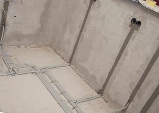

Качественный электромонтаж в СПБ и Лен. области, стаж 12 лет. Частный электрик, недорого и Качественно. Телефон - 8 904 642 08 57.

Замена старой электропроводки в квартире.
Если Вам нужен профессиональный и опытный мастер по проведению электромонтажных работ, то я готов предоставить свои услуги по монтажу электросетей в любых зданиях Москвы. Работаю даже в зданиях, где требуется особый подход, например, в панельном доме со стенами из бетона либо кирпича, поскольку профессиональное оборудование позволяет провести монтаж розеток в любые стены.
Ниже посмотрите наши цены!
 |
 |  |
Как электрик с большим опытом работы, предоставляю такие услуги, как замена старой электропроводки в квартире, монтаж новой, помогаю определиться с расположением необходимых розеток, составить оптимальный для Вас вариант электрификации помещения. Работы могу проводить в удобное заказчику время, быстро и качественно, не создавая лишнего беспорядка. Гарантирую выполнение работ точно в срок.
Сколько обходится замена старой проводки в СПБ?
Цена электромонтажной работы формируется и зависит от следующих важных факторов:
Стоит отметить, что итоговая цена работ по смене электропроводок формируется из стоимости применяемых материалов. Как вы уже сами догадались, качественные материалы обойдутся чуть дороже. Частный электрик готов вам помочь в приобретении материалов для работы или, по крайней мере, проконсультирует по этому вопросу.
- На стоимость работ также влияет сложность проведения электропроводки в квартире и площадь комнаты, где будет, производится установка электропроводок.
- Также при расчете окончательной стоимости работ частного электрика стоит учесть, что на цену влияет и толщина стен, диаметр применяемого кабеля и его длина.
- На стоимость окончательных работ влияет и количество автоматов в щитке, и тип монтируемой техники. Для замены электропроводок в доме нужен точный расчет и высококвалифицированные навыки по установке проводок.
- Непосредственный метод установки проводок в помещении. Тип строения, где должны проводиться работы - кирпичное или деревянное помещение.
На окончательную цену работ нашего частного электрика влияют все вышеперечисленные факторы.
|
Вариант квартиры |
Цена электромонтажа под ключ в рублях. |
|
Однокомнатная, электромонтаж. |
30 000 |
|
Двухкомнатная. |
38 000 |
|
Трёхкомнатная. |
47 000 |
|
Четырехкомнатная. |
55 000 |
|
Монтаж люстры. |
550 |
|
Монтаж светильников. |
400 |
|
Монтаж розетки, выключателя в СПБ. |
200 |
Часто, в связи с ремонтом, бывает необходимо перенести розетки, выключатели, люстры, осветительные приборы, и поменять частично, либо полностью, проводку в квартире.
Замена электропроводки требует, для начала, определить тип монтажа электропроводки. Открытая, или скрытая проводка имеет электроточки, расположение таких точек в помещении нужно выявить, так же, как и детальное расположение старой электропроводки в квартире.
Замена старой алюминиевой электропроводки.
Если нет возможности самостоятельно это сделать, то лучше позвонить мастеру. Производить монтаж проводки самостоятельно нельзя. Как профессиональный электрик, я могу помочь в решении этой проблемы. Предоставляю целый перечень услуг, среди которых не только диагностика системы, выбор наиболее подходящих и бюджетных вариантов замены проводки, монтаж открытой и скрытой проводок, но и замена старой электропроводки за потолками, натяжными или подвесными, и внутри перегородок. Произвожу замену скрытой проводки в строительных конструкциях, в трубах, а открытой - с использованием кабеля с высоким уровнем защиты, также в коробках, или гофрированных трубах.
Замена старых электропроводок в помещениях предполагает замену алюминиевых проводов, поскольку они могут не выдержать нагрузку, создаваемую новой техникой на сеть, существует опасность замыкания. Но сегодня используется новейшая техника прокладки линий, поэтому хороший мастер за небольшой срок и на высоком уровне качества произведет все необходимые работы по замене электропроводки. Это предусматривает монтажные работы, и новый провод, который защищен двойной изоляцией. Для выполнения прокладки сети в штробах стен, или над подвесным потолком, в полостях, в сборных перегородках нужно провести скрытую проводку. Важно различать, если потолок и стены состоят из материалов, которые сгорают - то необходимо прокладывать проводку в стальных трубах, если же материалы несгораемые - то в трубах ПВХ, используя провода и кабеля с оболочкой.
Выполняя свою работу на должном уровне и с гарантированными результатами, я использую для диагностики профессиональные приборы, тестеры, с помощью которых можно:
-проверить качество изоляции электропроводки и кабелей;
-устранить замыкание в сети;
-локализировать оборванный провод, обнаружить его повреждения;
-заменить старую электропроводку в квартире, и найти место утечки тока;
-обнаружить на глубине до 2 метров провод;
-ликвидировать последствия проведенного ранее некачественного электромонтажа.
Электрик по замене старой электропроводки.
Если у Вас в квартире плохо работают электроприборы, часто выбивает свет, наблюдается нагревание проводок, часто срабатывает защитное оборудование, и возникают опасения, связанные с работой электропроводки, то вызов электрика на дом просто необходим. Я могу помочь выявить различные неполадки в системе, наладить энергоснабжение быстро и качественно, с предоставлением гарантии на проведенные работы. Не стоит затягивать с решение такой серьезной проблемы, как неисправность электросети.
 Поменять проводку в квартире.
Поменять проводку в квартире. Сколько будут стоить материалы.
Электрика в загородном доме стоимость работ.

Замена электропроводки в панельном доме.
Расценки на электропроводку квартир.
Замена проводки в хрущевке.
Электромонтаж в частном доме.
Электрика в загородном доме.
Сколько стоит замена электропроводки в двухкомнатной квартире?.
Электрик в новостройку однокомнатная квартира недорого.

Сколько стоит поменять электропроводку в 3-х комнатной квартире.